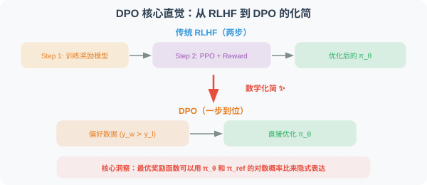
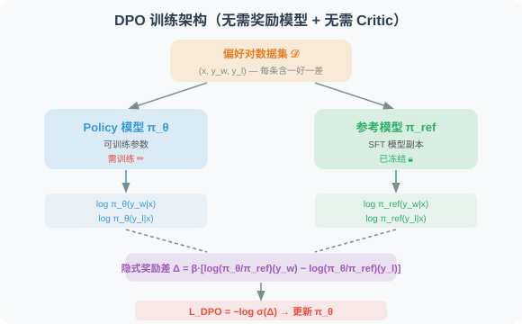

10.4 DPO：直接偏好优化
在 10.3 节 中，我们详细介绍了 PPO 算法——它需要训练一个 Critic 模型来估计优势函数，并且依赖在线采样和奖励模型。这使得 PPO 的训练流程复杂、资源消耗大。
DPO（Direct Preference Optimization） [1] 提出了一种全新的思路：直接从人类偏好数据中优化策略，无需奖励模型，无需 Critic，无需在线采样——将 RL 问题巧妙地转化为简单的监督学习问题。
2.1 DPO 的核心洞察
DPO [1] 是 2023 年 Stanford 团队提出的算法。它的核心洞察可以用一句话概括：
既然 RLHF 的最终目标是让模型的输出分布符合人类偏好，那能否跳过"训练奖励模型 → 用 PPO 优化"的两步流程，直接从偏好数据中优化策略？
答案是——可以！ DPO 通过一个精巧的数学推导，证明了 RLHF 的最优策略可以用一个闭式解表示，从而将 RL 问题转化为简单的监督学习问题。

2.2 数学推导：从 RLHF 到 DPO
这一推导是 DPO 论文最精妙的部分，我们逐步展开。
Step 1：RLHF 的优化目标
标准的 RLHF 优化目标是：
其中 是奖励模型的输出， 控制 KL 约束强度。
Step 2：推导最优策略的闭式解
对上述目标求解（使用变分法），可以得到最优策略的闭式表达：
其中 是配分函数（归一化常数）。
逐项解读：
- ：参考策略（SFT 模型）的概率——最优策略以 SFT 策略为"先验"
- ：奖励的指数函数——高奖励的输出概率被放大，低奖励的被缩小
- ：归一化因子——确保概率之和为 1
- ：温度参数—— 越小，最优策略越集中在高奖励输出上； 越大，越接近参考策略
- 直觉：最优策略 = 参考策略 × 奖励的指数调制。好的输出被放大，差的输出被缩小
Step 3：反解出隐式奖励
从 Step 2 的闭式解中，可以反解出奖励函数：
这是一个关键的发现：奖励可以用策略的对数概率比来表示！ 虽然我们不知道 的值，但它只依赖于 ，不依赖于 ——在比较两个输出时会被消去。
Step 4：代入 Bradley-Terry 偏好模型
在 RLHF 中，人类偏好建模使用 Bradley-Terry 模型 [2]：
其中 是 sigmoid 函数， 是偏好的（winning）输出， 是不偏好的（losing）输出。
将 Step 3 的隐式奖励代入， 项在做差时相消：
Step 5：得到 DPO 损失函数
最终的 DPO 损失函数就是上述偏好概率的负对数似然：
逐项解读（由内到外）：
- ：好输出的隐式奖励——当前策略相对参考策略对"好输出"的对数概率比。值越大 → 当前策略越偏好好输出
- ：差输出的隐式奖励——同理，但是对"差输出"
- ：隐式奖励差。我们希望 且尽可能大
- ：将奖励差映射为 [0, 1] 的概率
- ：负对数似然损失。 越大，损失越小
- ：在偏好数据集上求期望
一句话总结：DPO 让模型学会"给好输出更高的隐式奖励，给差输出更低的隐式奖励"——不需要显式训练奖励模型，也不需要在线采样。
2.3 DPO 的训练架构

DPO 的训练只需要：
- Policy 模型 ：可训练参数（初始化为 SFT 模型）
- Reference 模型 ：冻结的 SFT 模型副本，用于计算对数概率比
- 偏好数据集 ：每条数据包含 (输入 , 好输出 , 差输出 )
不需要：
- ❌ 奖励模型
- ❌ Critic 模型
- ❌ 在线采样（完全离线训练）
2.4 DPO 的代码实现
import torch
import torch.nn.functional as F
def dpo_loss(
policy_chosen_logps: torch.Tensor, # π_θ(y_w|x) 的 log 概率 [batch]
policy_rejected_logps: torch.Tensor, # π_θ(y_l|x) 的 log 概率 [batch]
ref_chosen_logps: torch.Tensor, # π_ref(y_w|x) 的 log 概率 [batch]
ref_rejected_logps: torch.Tensor, # π_ref(y_l|x) 的 log 概率 [batch]
beta: float = 0.1, # 温度参数
) -> tuple[torch.Tensor, dict]:
"""
计算 DPO 损失函数
核心公式：
L = -log σ(β · [log(π_θ/π_ref)(y_w) - log(π_θ/π_ref)(y_l)])
Args:
policy_chosen_logps: 当前策略对好输出的对数概率
policy_rejected_logps: 当前策略对差输出的对数概率
ref_chosen_logps: 参考策略对好输出的对数概率
ref_rejected_logps: 参考策略对差输出的对数概率
beta: 温度参数，控制对数概率差的缩放
Returns:
loss: 标量损失值
metrics: 监控指标字典
"""
# ── 计算隐式奖励 ──────────────────────────────────────────────
# 好输出的隐式奖励：log(π_θ/π_ref)(y_w)
chosen_rewards = policy_chosen_logps - ref_chosen_logps # [batch]
# 差输出的隐式奖励：log(π_θ/π_ref)(y_l)
rejected_rewards = policy_rejected_logps - ref_rejected_logps # [batch]
# ── 计算隐式奖励差 ────────────────────────────────────────────
# Δ = β · [好输出隐式奖励 - 差输出隐式奖励]
reward_margin = beta * (chosen_rewards - rejected_rewards) # [batch]
# ── DPO 损失 = -log σ(Δ) ─────────────────────────────────────
loss = -F.logsigmoid(reward_margin).mean()
# ── 监控指标 ──────────────────────────────────────────────────
metrics = {
"loss": loss.item(),
"chosen_rewards": chosen_rewards.mean().item(),
"rejected_rewards": rejected_rewards.mean().item(),
"reward_margin": reward_margin.mean().item(),
# 准确率：隐式奖励差 > 0 的比例（模型正确区分好差输出的比例）
"accuracy": (reward_margin > 0).float().mean().item(),
}
return loss, metrics
2.5 深入理解：DPO 与 KL 散度的关系
读到这里，你可能会有一个疑问：DPO 的 loss 中还有 KL 散度吗？ 毕竟在 PPO 中，KL 散度是作为显式惩罚项出现的。
简短回答：DPO 的最终 loss 函数中没有显式的 KL 散度项，但 KL 散度已经被隐式地"吸收"进了 loss 的数学结构中。
KL 散度出现在推导的"起点"
回顾 Step 1，DPO 的推导从标准 RLHF 优化目标出发：
这里 确实有一个显式的 KL 散度惩罚项 ，它约束当前策略不能偏离参考策略太远。这和 PPO 的 KL 惩罚是同一个东西。
KL 散度在推导过程中被"消化"了
DPO 的精妙之处在于：通过 Step 2 → Step 5 的数学推导，将 KL 约束的 RLHF 目标变换为了一个纯粹的监督学习 loss。在最终的 DPO loss 中：
- ❌ 没有显式的 KL 散度项（不像 PPO 那样在 loss 里加上 ）
- ✅ KL 约束被隐式编码在了 中——对数概率比 本身就是 KL 散度的组成部分
为什么说 KL 散度被"隐式包含"了？
KL 散度的定义是：
DPO loss 中的核心项 正是 KL 散度的被积函数。因此：
| PPO | DPO | |
|---|---|---|
| KL 散度 | 作为显式惩罚项加到 loss 中 | 隐式编码在对数概率比中，无需额外计算 |
| 参考策略 | 可选（也可以只用 Clip） | 必须有（是 loss 的核心组件） |
| 的作用 | 控制 KL 惩罚的权重 | 控制隐式奖励差的缩放（本质一样） |
直觉理解
PPO 说："先算出奖励，再用 KL 散度当刹车，防止跑偏。" → 需要奖励模型 + 显式 KL 计算
DPO 说："我直接把奖励和 KL 约束合并成一个公式，用对数概率比同时编码了'什么是好的'和'别跑太远'。" → 一步到位
2.6 DPO 的优缺点总结
| 维度 | 评价 |
|---|---|
| ✅ 极简架构 | 无需 Reward 模型、Critic 模型，显存 ≈ 2× 模型大小 |
| ✅ 训练稳定 | 本质是监督学习，不存在 RL 特有的不稳定性 |
| ✅ 易于实现 | 核心代码不到 20 行，超参数仅 一个 |
| ❌ 需偏好数据 | 依赖高质量的 偏好对，标注成本高 |
| ❌ 离线局限 | 完全离线训练，无法利用在线探索发现新策略 |
| ❌ 泛化有限 | 只能学到偏好数据中已有的"好"模式，难以超越数据上界 |
📌 DPO vs PPO 的核心差异
- PPO 是在线 RL：模型边生成边学习，能探索数据中未见过的行为模式
- DPO 是离线监督学习：只从已有的偏好对中学习，无法超越数据质量
这意味着：如果任务需要模型涌现全新的推理策略（如 DeepSeek-R1 的长链推理），DPO 不是最佳选择；但如果已有高质量偏好数据，DPO 是最简单高效的对齐方案。
DPO 极大地简化了 RLHF 的流程，但它是完全离线的——无法通过在线探索发现训练数据中未出现的新策略。下一节将介绍 GRPO，它结合了 PPO 的在线探索能力和比 PPO 更低的资源消耗，是 DeepSeek-R1 的核心训练算法。
面试常见题目
基础理解类
1. DPO 相比 PPO 最核心的简化是什么？它是如何避免训练奖励模型和 Critic 模型的？
参考要点：DPO 通过一个关键的数学推导——从 RLHF 优化目标推导出最优策略的闭式解，再将奖励函数用策略对数概率比来隐式表示。将这个隐式奖励代入 Bradley-Terry 偏好模型后，配分函数 在做差时相消，最终得到一个只依赖策略概率和参考策略概率的监督学习 loss。因此不需要显式训练奖励模型，也不需要 Critic 和在线采样。
2. 请完整推导 DPO 损失函数的五步过程，并解释每一步的核心作用。
参考要点：
- Step 1：写出标准 RLHF 优化目标（最大化奖励 - KL 惩罚）
- Step 2：用变分法求解最优策略闭式解
- Step 3：从闭式解反解奖励 ，关键发现：奖励可以用对数概率比表示
- Step 4：代入 Bradley-Terry 模型， 项在 做差时被消去
- Step 5：取负对数似然得到最终 DPO loss
深度理解类
3. DPO 的 loss 中到底有没有 KL 散度？如果没有显式的 KL 项，它是如何约束策略不偏离参考模型太远的？
参考要点：DPO loss 中没有显式的 KL 散度项，但 KL 散度被隐式编码在了 这个对数概率比中——这正是 KL 散度的被积函数。直觉上，DPO 把奖励和 KL 约束合并为了同一个公式：对数概率比同时编码了"什么是好的"和"别偏离太远"。 参数控制这种约束的强度—— 越大，策略越倾向于接近参考模型。
4. DPO 中 参数的作用是什么？ 过大和过小分别会导致什么问题？
参考要点：
- 是温度参数，控制隐式奖励差的缩放，本质上等价于 PPO 中 KL 惩罚系数的作用
- 过小（如 0.01）：loss 对偏好对的区分度极高，可能导致过拟合训练数据中的噪声偏好，训练不稳定
- 过大（如 1.0 以上）：策略几乎不会偏离参考模型，等于 RL 训练没有生效，策略更新幅度极小
- 通常建议
5. DPO 为什么被认为是"离线"的？这给它带来了什么根本性限制？在什么场景下这种限制可以被接受？
参考要点：
- DPO 完全依赖离线偏好数据 ，训练过程中不做任何新的采样
- 根本限制：无法通过在线探索发现训练数据中未出现的新行为模式，模型能力受限于偏好数据的质量和覆盖范围上界
- 可接受场景：已经拥有高质量偏好数据的场景（如人类标注的指令遵循偏好对）、对齐任务（alignment）中已有充分的好坏样本对比数据
- 不适合场景：需要模型涌现全新推理策略的任务（如 DeepSeek-R1 的长链推理），此时需要在线 RL（PPO/GRPO）
6. DPO 中为什么需要 Reference 模型？如果去掉 Reference 模型（令 为均匀分布），DPO 会退化为什么？
参考要点：
- Reference 模型是 DPO loss 的核心组件之一， 提供了隐式奖励的计算基准
- 如果 为均匀分布， 是常数，在好坏输出做差时被消去，DPO loss 退化为：，变成单纯的对数概率排序损失，失去了 KL 约束的效果，容易导致模型语言能力退化
7. 如果偏好数据中存在标注噪声（即 和 标反了），DPO 会如何受到影响？相比 PPO，DPO 对数据质量的敏感度如何？
参考要点：
- DPO 会直接学到"差的输出是好的"，因为它完全依赖偏好标签做监督学习，没有在线纠错机制
- 相比之下，PPO 通过在线采样和奖励模型有一定的噪声鲁棒性——即使奖励模型有偏差，在线探索也能帮助策略找到真正高奖励的行为
- DPO 对数据质量的敏感度远高于 PPO，这也是工业界通常对偏好数据进行严格质控的原因
8. 在 DPO 的代码实现中，chosen_rewards 和 rejected_rewards 的物理含义是什么？accuracy 指标在训练过程中应该呈现什么趋势？
参考要点：
chosen_rewards = policy_chosen_logps - ref_chosen_logps：当前策略相对于参考策略，对"好输出"的隐式奖励（对数概率比）rejected_rewards = policy_rejected_logps - ref_rejected_logps：同理，对"差输出"的隐式奖励reward_margin = β × (chosen_rewards - rejected_rewards)：隐式奖励差，希望 > 0 且逐步增大accuracy（reward_margin > 0 的比例）：应从初始值（约 0.5）逐步上升至接近 1.0，表示模型越来越能正确区分好差输出。如果 accuracy 长期不上升，说明训练无效；如果一开始就是 1.0，说明任务太简单
参考文献
[1] RAFAILOV R, SHARMA A, MITCHELL E, et al. Direct preference optimization: Your language model is secretly a reward model[C]//Advances in Neural Information Processing Systems (NeurIPS). 2023.
[2] BRADLEY R A, TERRY M E. Rank analysis of incomplete block designs: I. The method of paired comparisons[J]. Biometrika, 1952, 39(3/4): 324-345.
[3] OUYANG L, WU J, JIANG X, et al. Training language models to follow instructions with human feedback[C]//Advances in Neural Information Processing Systems (NeurIPS). 2022.